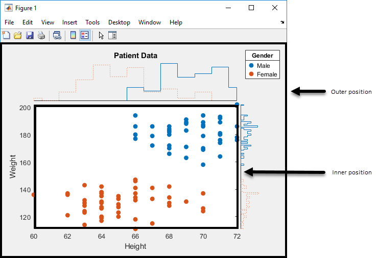

ScatterHistogramChart Properties
Control scatter histogram chart appearance and behavior
ScatterHistogramChart properties control the
appearance and behavior of a ScatterHistogramChart object.
By changing property values, you can modify certain aspects of the chart display. For example,
you can add a title:
s = scatterhistogram(rand(10,1),rand(10,1));
s.Title = 'My Title';Labels
Histograms
Histogram bin widths, specified as a positive scalar, 2-by-1 positive vector, or
2-by-n positive matrix, where n is the number of
groups in GroupData.
| Specified Value | Description |
|---|---|
| scalar | The value is the bin width for the x and y histograms. |
| 2-by-1 vector | The first value is the bin width for the x data, and the second value is the bin width for the y data. |
| 2-by-n matrix | The (1,j) value is the bin width for the histogram of
the x data that is in the jth group.
Similarly, the (2,j) value is the bin width for the histogram
of the y data that is in the jth
group. |
scatterhistogram uses the 'BinMethod','auto'
name-value pair argument of histogram to determine the default
NumBins and BinWidths values. The
BinWidths values for categorical data are always
0. When HistogramDisplayStyle is
"smooth", BinWidths is the bandwidth for the
kernel density estimator kde.
If you set BinWidths, then
scatterhistogram ignores the NumBins
value.
Example: s = scatterhistogram(__,'BinWidths',0.5)
Example: s.BinWidths = [1.5; 2]
Direction of the x data histograms, specified as
'up' or 'down'. If the
XHistogramDirection value is 'up', then the
x data histograms have bars directed upwards. If the
XHistogramDirection value is 'down', then the
x data histograms have bars directed downwards.
Example: s =
scatterhistogram(__,'XHistogramDirection','down')
Example: s.XHistogramDirection = 'down'
Direction of the y data histograms, specified as
'right' or 'left'. If the
YHistogramDirection value is 'right', then the
y data histograms have bars directed rightwards. If the
YHistogramDirection value is 'left', then the
y data histograms have bars directed leftwards.
Example: s =
scatterhistogram(__,'YHistogramDirection','left')
Example: s.YHistogramDirection = 'left'
Histogram line style, specified in one of these forms:
Character vector designating one line style
String array or cell array of character vectors designating one or more line styles
Choose among these line style options.
| Line Style | Description | Resulting Line |
|---|---|---|
"-" | Solid line |
|
"--" | Dashed line |
|
":" | Dotted line |
|
"-." | Dash-dotted line |
|
"none" | No line | No line |
When the total number of groups exceeds the number of specified line styles,
scatterhistogram cycles through the specified line styles.
Example: s = scatterhistogram(__,'LineStyle',':')
Example: s.LineStyle = {':','-','-.'}
Color and Font
Markers
Marker symbol for each scatter plot group, specified in one of these forms:
Character vector designating a marker style
String array or cell array of character vectors designating one or more marker styles
Choose among these marker options.
| Marker | Description | Resulting Marker |
|---|---|---|
"o" | Circle |
|
"+" | Plus sign |
|
"*" | Asterisk |
|
"." | Point |
|
"x" | Cross |
|
"_" | Horizontal line |
|
"|" | Vertical line |
|
"square" | Square |
|
"diamond" | Diamond |
|
"^" | Upward-pointing triangle |
|
"v" | Downward-pointing triangle |
|
">" | Right-pointing triangle |
|
"<" | Left-pointing triangle |
|
"pentagram" | Pentagram |
|
"hexagram" | Hexagram |
|
"none" | No markers | Not applicable |
By default, scatterhistogram assigns the marker symbol
'o' to each group in the scatter plot. When the total number of
groups exceeds the number of specified symbols, scatterhistogram
cycles through the specified symbols.
Example: s = scatterhistogram(__,'MarkerStyle','x')
Example: s.MarkerStyle = {'x','o'}
Marker size for each scatter plot group, specified as a nonnegative scalar or
nonnegative vector, with values measured in points. By default,
scatterhistogram assigns 36 as the marker size
for each group in the scatter plot. When the total number of groups exceeds the number
of specified values, scatterhistogram cycles through the specified
values.
Example: s = scatterhistogram(__,'MarkerSize',30)
Example: s.MarkerSize = 40
State of marker face fill, specified as 'on' or
'off'. If MarkerFilled is set to
'on', then scatterhistogram fills the interior
of the markers in the scatter plot. If MarkerFilled is set to
'off', then scatterhistogram leaves the
interior of the scatter plot markers empty.
Example: s =
scatterhistogram(__,'MarkerFilled','off')
Example: s.MarkerFilled = 'off'
Marker transparency for each scatter plot group, specified as a numeric scalar or
numeric vector with values between 0 and 1. Values closer to 0 specify more transparent
markers, and values closer to 1 specify more opaque markers. By default,
scatterhistogram assigns a MarkerAlpha value
of 1 to all markers in the scatter plot.
Example: s =
scatterhistogram(__,'MarkerAlpha',0.75)
Example: s.MarkerAlpha = [0.2 0.7 0.4]
Layout
Position
Position property to hold constant when adding, removing, or changing decorations, specified as one of the following values:
'outerposition'— TheOuterPositionproperty remains constant when you add, remove, or change decorations such as a title or an axis label. If any positional adjustments are needed, MATLAB adjusts theInnerPositionproperty.'innerposition'— TheInnerPositionproperty remains constant when you add, remove, or change decorations such as a title or an axis label. If any positional adjustments are needed, MATLAB adjusts theOuterPositionproperty.
This figure shows the innerposition and
outerposition definitions for
ScatterHistogramChart.

Example: s.PositionConstraint = 'outerposition'
Note
Setting this property has no effect when the parent container is a
TiledChartLayout object.
Inner size and position of the chart within the parent container (typically a
figure, panel, or tab), specified as a four-element numeric vector of the form
[left bottom width height]. The inner position includes only the
scatter plot.
The
leftandbottomelements define the distance from the lower left corner of the container to the lower left corner of the scatter plot.The
widthandheightelements are the dimensions of the scatter plot.
For an illustration, see PositionConstraint.
Note
Setting this property has no effect when the parent container is a
TiledChartLayout object.
Outer size and position of the full scatter histogram chart within the parent
container (typically a figure, panel, or tab), specified as a four-element numeric
vector of the form [left bottom width height]. The default value of
[0 0 1 1] includes the whole interior of the container.
For an illustration, see PositionConstraint.
Note
Setting this property has no effect when the parent container is a
TiledChartLayout object.
Inner size and position of the chart within the parent container (typically a
figure, panel, or tab), specified as a four-element numeric vector of the form
[left bottom width height]. This property is equivalent to the
InnerPosition property.
Note
Setting this property has no effect when the parent container is a
TiledChartLayout object.
Position units, specified as one of these values.
Units | Description |
|---|---|
'normalized' (default) | Normalized with respect to the container, which is typically the figure
or a panel. The lower left corner of the container maps to
(0,0), and the upper right corner maps to
(1,1). |
'inches' | Inches. |
'centimeters' | Centimeters. |
'characters' | Based on the default uicontrol font of the graphics root object:
|
'points' | Typography points. One point equals 1/72 inch. |
'pixels' | Pixels. On Windows® and Macintosh systems, the size of a pixel is 1/96th of an inch. This size is independent of your system resolution. On Linux® systems, the size of a pixel is determined by your system resolution. |
When specifying the units as a name-value pair during object creation, you must set
the Units property before specifying the properties that you want
to use these units, such as OuterPosition.
Layout options, specified as a TiledChartLayoutOptions or
GridLayoutOptions object. This property is useful when the chart
is either in a tiled chart layout or a grid layout.
To position the chart within the grid of a tiled chart layout, set the
Tile and TileSpan properties on the
TiledChartLayoutOptions object. For example, consider a 3-by-3
tiled chart layout. The layout has a grid of tiles in the center, and four tiles along
the outer edges. In practice, the grid is invisible and the outer tiles do not take up
space until you populate them with axes or charts.

This code places the chart c in the third tile of the
grid.
c.Layout.Tile = 3;
To make the chart span multiple tiles, specify the TileSpan
property as a two-element vector. For example, this chart spans 2
rows and 3 columns of
tiles.
c.Layout.TileSpan = [2 3];
To place the chart in one of the surrounding tiles, specify the
Tile property as "north",
"south", "east", or "west".
For example, setting the value to "east" places the chart in the tile
to the right of the
grid.
c.Layout.Tile = "east";To place the chart into a layout within an app, specify this property as a
GridLayoutOptions object. For more information about working with
grid layouts in apps, see uigridlayout.
If the chart is not a child of either a tiled chart layout or a grid layout (for example, if it is a child of a figure or panel) then this property is empty and has no effect.
State of object visibility, specified as 'on' or
'off', or as numeric or logical 1
(true) or 0 (false). A value
of 'on' is equivalent to true, and
'off' is equivalent to false. Thus, you can use
the value of this property as a logical value. The value is stored as an on/off logical
value of type matlab.lang.OnOffSwitchState.
'on'— Display theScatterHistogramChartobject.'off'— Hide theScatterHistogramChartobject without deleting it. You can still access the properties of an invisibleScatterHistogramChartobject.